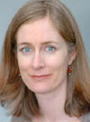

Acerca del Centro de Excelencia de CDC de Investigación y Prevención de Defectos de Nacimiento de la Facultad de Medicina de la Universidad de Stanford
Los nacimientos de California representan el 15% de todos los nacimientos en los Estados Unidos. Sólo este año, 17.000 bebés con defectos de nacimiento nacieron en California, y 2.000 de estos bebés morirán antes de cumplir un año. Descubrir las causas es nuestra única esperanza para la prevención de defectos de nacimiento y trabajar hacia el objetivo más amplio de asegurar que cada persona nazca saludable.
El Centro de Excelencia de California es una alianza de colaboración entre la Escuela de Medicina de la Universidad de Stanford y el Programa de Monitoreo de Defectos de Nacimiento del Departamento de Salud Pública. El Centro recopila datos de las mujeres que residen en ocho condados en el Valle Central. Ha sido financiado por el CDC desde 1997.
Nuestras preguntas de investigación son:
Responder a por qué algunos grupos raciales o étnicos tienen un mayor riesgo de defectos de nacimiento.
- ¿Por qué los latinos tienen un riesgo elevado de defectos de nacimiento del cerebro y la columna vertebral?
- ¿Por qué los bebés afroamericanos con defectos de nacimiento tienen mayor probabilidad de morir?
Responder a las preguntas de los padres en California acerca de cómo tener un embarazo saludable y un bebé sano
- ¿El estrés afectará a mi bebé?
- ¿Comer ciertos alimentos puede ayudar a mi bebé?
Responder a las preguntas sobre las exposiciones ambientales que son especialmente importantes en California.
- ¿La exposición a los pesticidas, la contaminación del agua o la polución del aire causan defectos de nacimiento?
También hacemos investigación para tratar de comprender cómo los genes y el medio ambiente interactúan para afectar los riesgos de defectos de nacimiento.
Investigadores Principal Gary Shaw, DrPH
.jpg)
Gary Shaw, DrPH, es Investigador Principal del Centro de California. Dr. Shaw ha estado llevando a cabo la investigación sobre defectos de nacimiento por más de 20 años.
"“Es un privilegio trabajar con científicos talentosos y padres interesados para tratar de entender las causa de los defectos de nacimiento. El programa de investigación cooperativa que los CDC financia es una de nuestras mejores esperanzas para la prevención de la ocurrencia de defectos de nacimiento.” – Gary Shaw"
— Gary Shaw
Investigador Principal Suzan Carmichael, PhD
"“Estamos muy agradecidos por la generosidad de los padres que nos proporcionan información acerca de sus experiencias. Eso es lo que hace posible este estudio. La información proporciona la clave para encontrar las causas de defectos de nacimiento – para finalmente con el tiempo poder prevenirlos.” – Suzan Carmichael"
— Suzan Carmichael
Resultados notables de la investigación:
Los siguientes son ejemplos seleccionados de las publicaciones importantes de investigación liderados por el Centro de CA.
Carmichael SL, Ma C, Feldkamp ML, Munger RG, Olney RS, Botto LD, Shaw GM, Correa A. Nutritional factors and hypospadias risks. Paediatric and Perinatal Epidemiology. 2012; 26(4):353-360.
Carmichael SL, Yang W, Feldkamp ML, Munger RG, Siega-Riz AM, Botto LD, Shaw G, National Birth Defects Prevention Study. Reduced risks of neural tube defects and orofacial clefts with higher diet quality. Archives of Pediatrics and Adolescent Medicine. 2012; 166(2):121-126.
Ma C, Shaw GM, Scheuerle AE, Canfield MA, Carmichael SL, National Birth Defects Prevention Study. Association of microtia and maternal nutrition. Birth Defects Research (Part A): Clinical and Molecular Teratology. 2012; 94(12):1026-1032.
Yang W, Carmichael SL, Tinker SC, Shaw GM, National Birth Defects Prevention Study. Association between weight gain during pregnancy and neural tube defects and gastroschisis in offspring. Birth Defects Research (Part A): Clinical and Molecular Teratology. 2012; (12):1019-1025.
Shaw GM, Carmichael SL, Yang W, Siega-Riz AM. Periconceptional intake of folic acid and food folate and risks of preterm delivery. American Journal of Perinatology. 2011; (10):747-752.
Información de contacto:
Investigadores Principales:
Gary M. Shaw, DrPH
Professor, Department of Pediatrics
Division of Neonatal & Developmental Medicine
Stanford University
Suzan Carmichael, PhD
Associate Professor, Department of Pediatrics
Division of Neonatal & Developmental Medicine
Stanford University
Teléfono: 650-721-5746
Email:CA@bdsteps.org